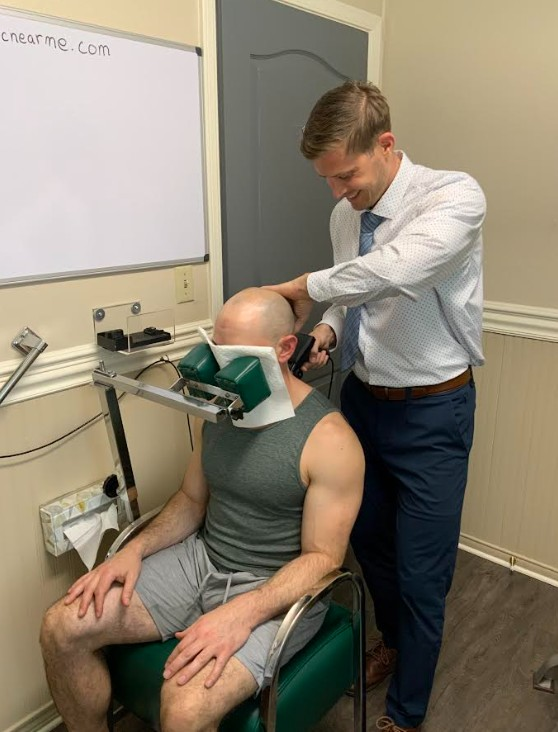
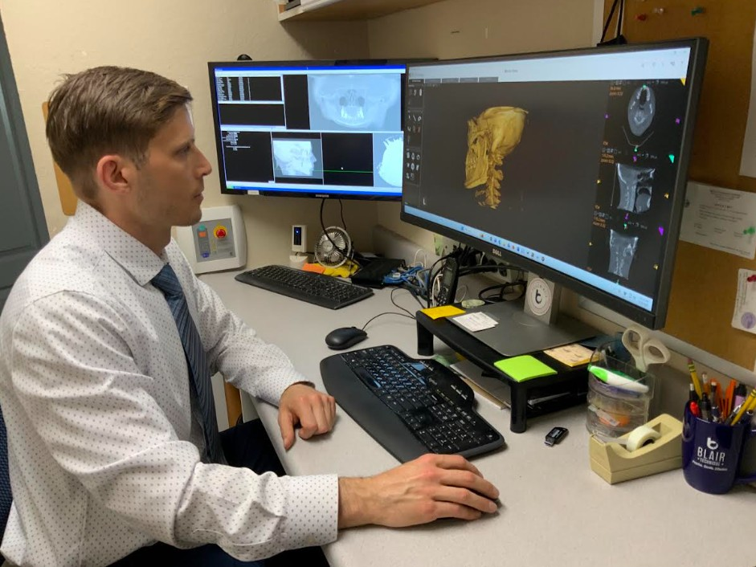

Upper Cervical Chiropractic in Pleasanton, CA
Gentle, precise, principled chiropractic care.
We use 3D imaging to find the exact angles of your upper neck, then make a light, specific correction—no twisting, popping, or cracking.
4–8 lbs of pressure
A gentle, precise adjustment with your neck in a relaxed, neutral position.
Tailored to you
3D imaging shows the unique shape of your upper neck, so care is specific to you.
50 years in Pleasanton
Continuing the practice Dr. Thomas Forest built here in 1975.
Why Upper Cervical?
What is upper cervical chiropractic?
Upper cervical care focuses on the top two bones of the neck—the atlas (C1) and axis (C2). This small area is unlike any other part of the spine. These two bones handle about half of your neck's nodding and turning, which makes them the most movable part of the spine—and the most easily injured.
The brainstem and spinal cord pass right through this region. When the atlas shifts out of place, even by a millimeter or two, it can interfere with communication between the brain and body. It can also shift the head's center of gravity, and the rest of the spine compensates, sometimes all the way down to the hips and knees.
Our goal is to find that misalignment, correct it gently, and give your body the chance to hold the correction and heal.

Our Technique
The Blair Upper Cervical Technique
What makes Blair different from other types of chiropractic is the idea of asymmetry. Dr. William Blair studied thousands of atlas vertebrae and found that most are not perfectly symmetrical—everyone's joints are shaped a little differently.
So instead of a one-size-fits-all adjustment, we take a specialized series of images to measure the exact angles of your joints. Using those angles, Dr. Marsh delivers a quick, light correction while your neck stays relaxed. Most patients are surprised by how gentle it is.
Learn more at blairchiropractic.com.
Meet the Doctor
Dr. Sean Marsh, D.C.
Dr. Marsh was born and raised in British Columbia, Canada. After earning his B.S. in Biology in 2016, he spent eight years working in concrete and road maintenance—including driving a snowplow in the winters.
In 2018, he was rear-ended by a work truck. Over the next year he developed brain fog, headaches, ringing in his ears, trouble sleeping, and a constant pressure in his head. Looking for answers, he sold his belongings and moved to California in 2020 to attend Life Chiropractic College West.
There he was introduced to upper cervical care and received his first adjustment at this very office. The pressure in his head eased right away, and over the next few weeks his mental clarity returned. He was hooked.
Dr. Marsh took the Blair Upper Cervical elective taught by Dr. Tom Forest, then spent his last year and a half of school—and six months after graduation—training alongside Dr. Forest at Forest Chiropractic Office. One of his very first patients had struggled with neck pain and headaches for seven years after a car accident; after a series of gentle adjustments and some time, those symptoms resolved.
He traveled to Belgium to become certified in the Blair Technique and graduated Summa Cum Laude in 2023. Today he carries on the care and philosophy Dr. Forest established over 50 years in Pleasanton, with careful evaluations and individualized care for every patient. Looking ahead, he hopes to earn his Blair teaching certification to help other chiropractors bring this gentle approach to their own communities.
“It's the least amount of force you can put into someone's system, with the greatest results.”
How We Can Help
Common reasons patients visit
Many people find us after trying other options. Patients commonly come to us with:
- Neck, back & shoulder pain
- Headaches & migraines
- Dizziness & vertigo
- Tinnitus & Meniere's
- Jaw pain & TMJ
- Brain fog
- Whiplash & car accident injuries
- Restricted neck movement
- Tingling or burning in arms & legs
- Tremors & twitches
- Posture problems
- Scoliosis
Not sure if we can help? Call us—we're happy to talk it through.
New Patients
What to expect
Every patient gets a thorough evaluation before any adjustment, so we know exactly what's going on and how to help.
Discovery Day
- Health history & consultation
- Neurological & orthopedic exam
- Thermographic scan
- Blair 3D imaging
Report of Findings
- Review your images together
- Your personalized care plan
- Your first adjustment
Check-ups
- Thermographic scan
- Postural analysis
- Adjust only when needed

Holding the correction
Once your atlas is back in place, the goal is for it to stay there while the surrounding muscles and ligaments heal. That's why we check first and adjust only when your body needs it. As your alignment holds longer, visits become less frequent.
Have questions before your first visit? Call 925-722-5507 for a free consultation.
Patient Stories
What our patients say
★★★★★ 5.0 on Google
“Upper cervical chiropractic care has truly been life changing! I was living with chronic pain that affected my daily life, but being cared for here has brought full healing, in ways I never thought was possible. Their approach stands out as it is very precise, gentle, and specific to your unique needs. It's clear that Dr. Marsh genuinely cares about helping his patients experience healing.”
“I have been seeing Dr. Marsh for several months now and can't be happier with his care. He is a thoughtful, precise and highly skilled upper cervical chiropractor.”
“Came in very hopeful that these visits would help me with my brain fog, dizzy spells, and my posture.”
Visit Us
Schedule an appointment
New patients can call for a free consultation to ask questions and see if upper cervical care is right for you.
Contact
4224 Stanley Blvd
Pleasanton, CA 94566
Office Hours
| Monday | 9:00am – 6:00pm |
| Tuesday | 9:00am – 6:00pm |
| Wednesday | Closed |
| Thursday | 9:00am – 6:00pm |
| Friday | 9:00am – 6:00pm |
| Saturday | 8:00am – 12:00pm |
| Sunday | Closed |